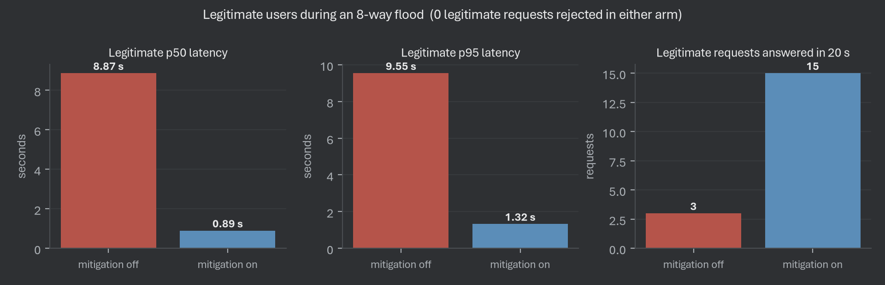

nginx limit_req, API-gateway requests-per-second rules and WAF throttles all
count requests, because on a conventional web service requests cost roughly
the same. On an LLM endpoint they do not: a 24-token chat reply and a 2048-token generation
differ in GPU cost by nearly three orders of magnitude, and both are one well-formed
request.
A team self-hosting an open-weights model behind a public or partner-facing API, without per-tenant GPU isolation — the normal case, since dedicating a GPU per tenant is what self-hosting avoids.
It takes the position an API gateway already occupies, speaks the same OpenAI-compatible protocol, and swaps the requests-per-second rule living there for a token-cost budget. The endpoint URL moves by one port; the model, the server and the client are untouched.
Eight requests is a rate no
plausible RPS budget would block and no anomaly rule would call a flood. No botnet, no
spoofing, no volume — just a large max_tokens.
num_requests_running and
num_requests_waiting on a Prometheus endpoint, so a proxy can read the backend's
real queue instead of inferring it from response times, which is a lagging signal.X-Client-ID. Never retries a rejection.
--max-num-seqs 8. Its
/metrics queue depth feeds back into layer 2.
gateway.jsonl and a sampled state series, joined on request ID
to produce every number here.
One bucket meters request rate. The second meters cost, charged
prompt_tokens + max_tokens at admission — the true cost is
only known once a generation ends, by which time the GPU time is spent. An omitted
max_tokens is charged the default, not zero; n and
best_of multiply the charge.
global_max_inflight is held at the backend's
--max-num-seqs. Admit more and the queue still forms, but inside vLLM where it
cannot be reordered or shed. Past the cap a request waits 200 ms, then gets a 503. Under
pressure, shedding is fair-share by recent token cost, with a reserved lane partitioned on
request cost rather than identity.
A variational autoencoder over a 12-feature per-client window, trained on normal traffic only and scoring reconstruction error as novelty — so no attack is ever labelled and nothing leaks across the train/test boundary. It tunes bucket multipliers rather than blocking, decays instead of latching, and fails open.
Retry-After.| 429 | rate_limit_requests · rate_limit_cost · client_concurrency · cost_exceeds_budget · anomaly_shed |
| 503 | queue_pressure · queue_timeout · global_capacity |
| 413 | body_too_large |
X-Traffic-Label. Branching on ground truth
would turn "attacker rejection rate" into a measurement of the label rather than of the
defence.off, ratelimit, ratelimit_queue, full.The mitigation was the easy half. Most of the work went into tests that appeared to pass while measuring nothing.
/metrics inside a bare except: pass and read a missing
value as 0 — and /metrics is what stops answering under load.
Changed: an absent snapshot is unknown, never empty, and staleness is
recorded.
0.0 and the steady cheap client measured as 100% — legitimate traffic took
45.5% rejection.
Changed: in-flight cost stays charged until completion, then is
released.
pip install -e ".[dev]"pytest → 75 passedpython -m gateway.fake_vllm --max-num-seqs 8integration.ipynb top to bottom: it installs vLLM, serves
Qwen2.5-0.5B, then drives the same load through
configs/off.yaml and configs/ratelimit_queue.yaml.ConnectError because no
gateway was listening. Its 35,128 attacker "requests" are refused connections returning
instantly, not load. It sits in excluded_runs with the reason rather than
deleted.| Metric | Off | On |
|---|---|---|
| Legitimate p95 | 9.546 s | 1.323 s |
| Legitimate p50 | 8.867 s | 0.894 s |
| Legitimate answered | 3 | 15 |
| Legitimate rejected | 0 | 0 |
| Attacker admitted | 24 | 8 |
| Attacker rejection rate | 0% | 50% |
| Attacker p95 | 10.355 s | 12.113 s |
Capacity was reallocated, not created. The attacker's own p95 rose while half its requests were refused: being an expensive client became slower and less reliable, which is the incentive a cost-based limiter should create.

The two left panels are the result; the right panel is what makes it credible. Latency fell and throughput rose and nothing legitimate was rejected — three facts that cannot all hold if the latency win came from shedding users. A gateway that rejects 95% of traffic has an excellent p95, so we never quote one without the other.
--max-num-seqs does not remove the queue, only
moves it out of reach. This mattered more than any threshold we tuned.